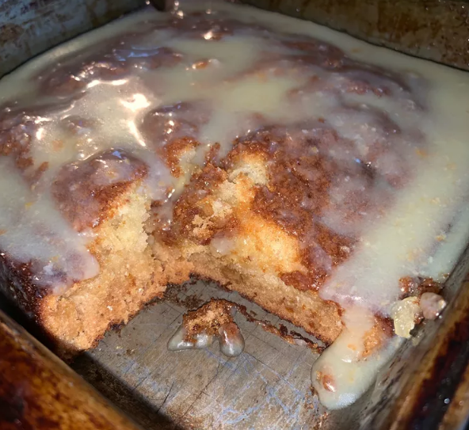

Malva Pudding Recipe

Description
This ginger malva pudding is a unique take on a traditional South African dessert. Serve hot with ice cream or whipped cream, or cold with hot homemade custard.
Ingredients
- 1 cup white sugar
- 1 egg
- 1 tablespoon butter
- 1 tablespoon apricot jam
- 1 tablespoon white vinegar
- 2 teaspoons ground ginger
- 1 teaspoon baking soda
- 1 cup milk
- 1 cup all-purpose flour
Sauce
- 1 cup milk
- ½ cup butter
- ½ cup white sugar
- ¼ cup water
Steps
- Preheat oven to 400 degrees F (200 degrees C). Grease and flour a 9-inch cake pan.
- Combine sugar, egg, and butter in a large bowl; beat with an electric mixer until creamy. Beat in apricot jam, vinegar, ginger, and baking soda. Add milk and flour; beat until batter is smooth. Pour batter into the prepared pan.
- Bake in the preheated oven until a toothpick inserted into the center comes out clean, about 35 minutes.
- Make sauce: Combine milk, butter, sugar, and water in a saucepan over medium heat 5 minutes before pudding is done baking. Bring to a boil and stir until smooth. Pour hot sauce over pudding and let it sink into the pudding.